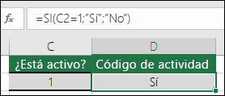

Nos permite realizar una acción siempre y cuando se cumpla con una condición determinada por el usuario.
Sintaxis
Sintaxis
La función SI permite realizar comparaciones lógicas entre un valor y un resultado que se espera.
Una de las funciones lógicas, para devolver un valor si una condición es verdadera y otro si es falsa.
Una instrucción SI puede tener dos resultados. El primer resultado es si la comparación es Verdadera y el segundo si la comparación es Falsa.
Por ejemplo, =SI(C2=1;"Sí";"No")

Condicionales
Funciones Condicionales; SUMAR.SI
En la clase de informatica nos han enseñado sobre la función SUMAR.SI y esta se usa para sumar los valores intervalo de un rango que cumplan los criterios que haya especificado. Por ejemplo, supongamos que, en una columna que contiene números, solo quiere sumar los valores mayores que 5. Puede usar la siguiente fórmula: =SUMAR.SI(B2:B25;">5")